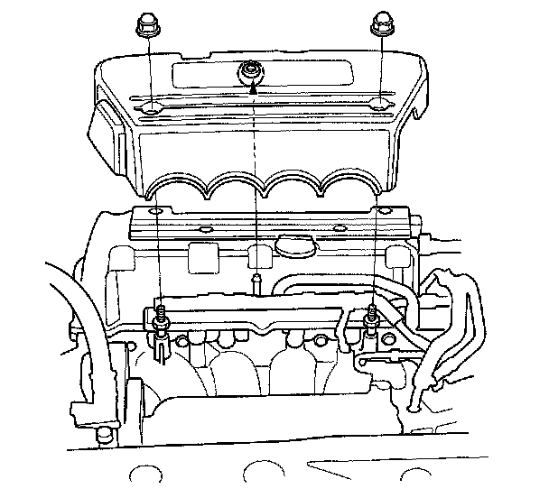
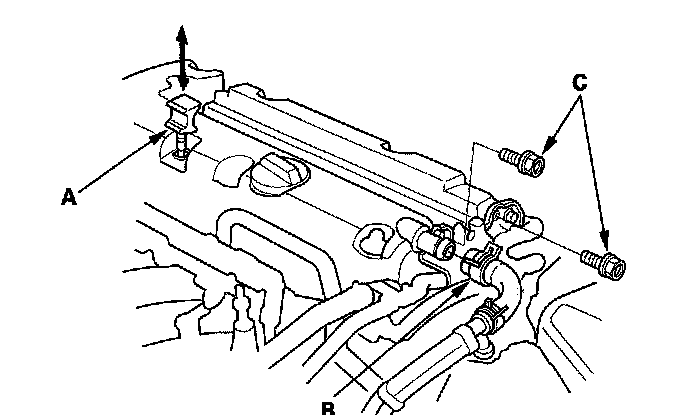
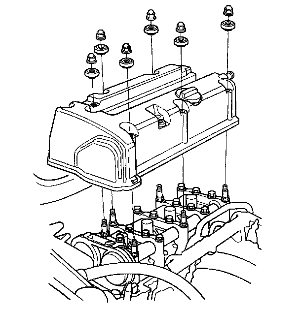

Cylinder Head Cover Removal
Cylinder Head Cover Removal1. Remove the engine cover.

2. Remove the four ignition coils.
3. Disconnect the evaporative emission (EVAP) canister purge valve connector.
4. Remove the dipstick (A) and the breather hose (B).

5. Remove two bolts (C) securing the evaporative emission (EVAP) canister purge valve bracket.
6. Remove the cylinder head cover.
